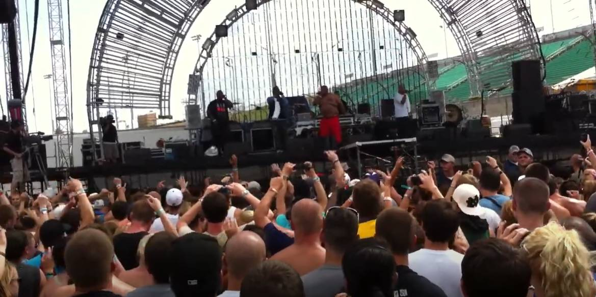

D12 (acrónimo de The Dirty Dozen) es un colectivo de hip hop fundado en 1996 en Detroit, Míchigan. El grupo alcanzó el estrellato mundial gracias al éxito masivo de uno de sus miembros, Eminem, cumpliendo el pacto de que el primero en triunfar regresaría por el resto.Artistas e IntegrantesEl concepto del grupo se basaba en que cada uno de los 6 miembros tuviera un alter ego, sumando así la "docena sucia":Proof (Dirty Harry): Líder y fundador.Eminem (Slim Shady): El miembro más exitoso a nivel global.Bizarre (Peter S. Bizarre): Conocido por su estilo extravagante.Kon Artis / Mr. Porter (Denaun Porter): Productor principal y rapero.Kuniva (Rondell Beene): Miembro fundador que sigue activo.Swift / Swifty McVay: Se unió tras la muerte del miembro original Bugz en 1999.Discografía PrincipalEl grupo lanzó dos álbumes de estudio que dominaron las listas internacionales:Devil's Night (2001): Debut #1 con éxitos como "Purple Pills" y "Fight Music".D12 World (2004): Segundo álbum #1, impulsado por el single "My Band".Mixtapes destacados: Return of the Dozen (2008) y The Devil's Night Mixtape (2015).
Giras y PresentacionesD12 fue conocido por su energía caótica en el escenario y su participación en grandes eventos:Anger Management Tour (2002-2005): Gira masiva junto a Eminem, 50 Cent y G-Unit.Vans Warped Tour (2001): Participación destacada durante su auge inicial.Giras Recientes: Aunque Eminem ya no forma parte activa, el dúo formado por Kuniva y Swifty McVay sigue realizando conciertos, incluyendo una gira por el 25 aniversario de Devil's Night programada para junio de 2026 en el Reino Unido.